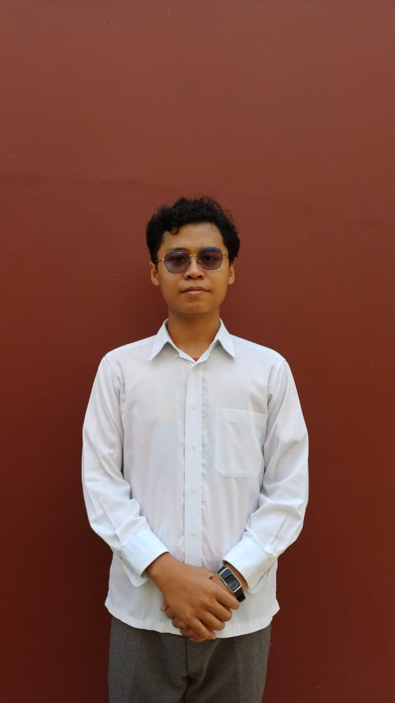

Kepada yth
Bapak/ Ibu Pimpinan Perusahaan
Di Tempat
Dengan hormat.
Sesuai dengan penawaran lowongan pekerjaan dari perusahaan Bapak/Ibu, seperti yang dimuat di harian Pikiran Rakyat tanggal 25 Juni 20XX. Saya bermaksud untuk mengajukan lamaran pekerjaan pada perusahaan yang bapak / Ibu pimpin.
Mengenai diri saya, dapat saya jelaskan sebagai berikut:
| Nama | Muhammad Fikri Maulana |
|---|---|
| Tempat dan Tanggal Lahir | Karawang, Febuari 2006 |
| Pendidikan terakhir | SMA-MA Al-Muhajirin |
| Alamat | Perum Gempol Permai, Tanjung Pura, Karawang Barat |
Berikut ini saya lampirkan beberapa surat keterangan dan link portofolio yang kiranya dapat dijadikan bahan pertimbangan oleh Bapal / Ibu:
Besar Harapan saya untuk dapat diberi kesempatan wawancara, dan dapat menjelaskan lebih mendalam mengenai diri saya seperti yang tersirat.
Atas perhatian Bapak / Ibu saya ucapkan terima kasih yang sebesar-besarnya.